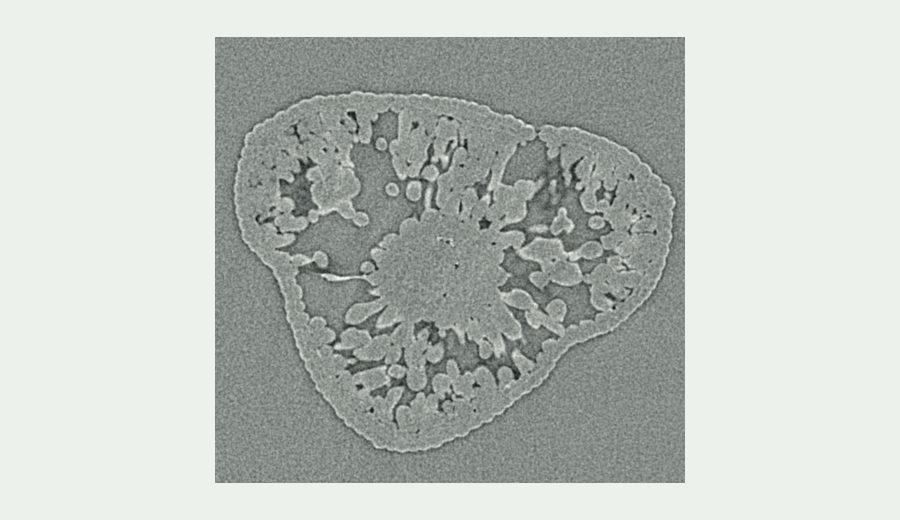
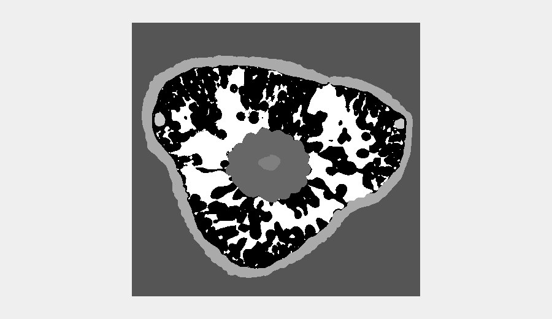

Leaf X-ray micro-CT Datasets
Leaf CT Hub is an open catalog for discovering and reusing plant X-ray micro-CT datasets. The hub provides preview images, segmentation labels, metadata, and download link to support leaf anatomy, phenotyping, and image segmentation research.

Raw
Mask- Background
- Epidermis
- Mesophyll
- Resin duct
- Air space
- Transfusion tissue
- Vascular bundle
Catalog overview
What the catalog holds today, counted from the dataset records.
Representative Dataset Records
Representative records show the type of metadata, preview images, labels, and repository links included in the catalog.
Segmentation Tools
Companion Tools for Leaf CT Segmentation
The catalog pairs with a companion segmentation app, so you can go from browsing a dataset to testing the underlying model on your own images.
Leaf CT Segmentation App
Access the hosted segmentation app, or review the training workflow used to build the segmentation model.